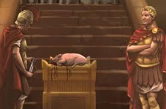

Contents

Daniel 11:31 Forces from him will arise, desecrate the sanctuary fortress, and do away with the regular sacrifice. And they will set up the abomination of desolation
Physical fulfillment of the Abomination of Desolation
The prophecies articulated in Dani’el have a multi-layered significance and are fulfilled both physically and spiritually in various ways. The various aspects of what יהוה revealed to Dani’el remain a topic of extensive discussion. יהוה presented a tangible realization of Dani’el's predictions, which we must examine to grasp the corresponding spiritual manifestation.
Yeshayahu/Isaiah 483“I have declared the former events from the beginning, and they went forth from My mouth [to the prophets], and I made you hear them
[through physical shadows]. Suddenly I acted, and they came to be [Spiritually].
Antiochus IV, the Lucid King, fulfilled the prophecies of Dani’el in a literal sense within the physical world.
This view is supported by the Jewish Encyclopedia, the Jewish Publication Society study bible, the Catholic New American Bible commentary and some evangelical Christian scholars. Undoubtedly, Antiochus IV fulfilled Dani’el's prophecies in a literal sense, when viewed objectively. Therefore, this is the illustration we must comprehend in order to grasp the spiritual occurrence that we are delving into.
I want to provide a quick explanation of Antiochus IV as the literal physical fulfillment of The Abomination of Desolation Dani’el prophesied. We will then study that physical shadow in order to learn more and help identify the spiritual fulfillment of The False Messiah and The Abomination of Desolation spoken of in The New Testament. That is what Yeshua meant when he pointed us back to the prophecy of Dani’el and said “let the reader understand”. Yeshua was indicating we are to study the physical to spiritual parallel.
My intention is to succinctly explain how Antiochus IV perfectly personifies the concrete manifestation of The Abomination of Desolation prophesied by Dani’el. Our objective is to examine the tangible shadow and gain insights into the spiritual realization of The False Messiah and The Abomination of Desolation, which are referenced in The New Testament. Our aim is to enhance our understanding and assist in identifying them. Yeshua was referencing the prophecy of Dani’el when he urged readers to comprehend its meaning. Yeshua was suggesting that we should examine the correlation between the tangible and intangible aspects.
Antiochus IV fulfilled Dani’el’s Vision in detail
It is the spiritual fulfillment of this physical example that is within the scope of this chapter and relative to The Kingdom of יהוה.
Dani’el saw in his vision that the initial horn of the male goat was shattered, resulting in the emergence of four horns. Historical-critical scholars commonly identify the "little horn" as Antiochus IV Epiphanes, who was replaced by one of four horns after his reign, according to some interpretations. The text in Dani’el 8:10-14 pertains to the actions of Antiochus towards the Jewish population during his reign, a period that culminated with the Maccabean Revolt and the rededication of The Altar. Furthermore, it is believed that Dani’el 11, which mentions Persia and Greece and two rulers, pertains to the Seleucids dynasty and more specifically to Antiochus Epiphanes, who is identified as "The King of the North."
The individual referred to as the "prince who is expected" in Dani’el 9:26 has been identified as Antiochus Epiphanes, who led an army that launched a partial invasion of Yerushalayim resulting in extensive Desolation and the killing of numerous residents. Antiochus IV Epiphanes put an end to the act of making sacrifices and offering grains in the middle of the week, and instead, substituted it by offering a pig on יהוה's altar to Zeus. This act can be seen as a symbolic representation of Easter. The act of horror took place during the Christmas season, observed on December 25th, as Antiochus was known to worship the sun and this holiday symbolizes the revival of the sun deity, Ba'al.
We read in the book of Maccabees
2 Maccabees 6:1–12
Not long after this the king [Antiochus IV] sent an Athenian senator to force the Jews to abandon the customs of their ancestors and live no longer by the laws of יהוה; also to profane the temple in Yerushalayim and dedicate it to Olympian Zeus, and that on Mount Gerizim to Zeus the Hospitable, as the inhabitants of the place requested...They also brought into the temple things that were forbidden, so that the altar was covered with [the blood] abominable offerings prohibited by the laws [a pig]. A man could not keep the Shabbat or celebrate the traditional feasts [of יהוה], nor even admit that he was a Jew. At the suggestion of the citizens of Ptolemais, a decree was issued ordering the neighbouring Greek cities to act in the same way against the Jews: oblige them to partake of the sacrifices and put to death those who would not consent to adopt the customs of the Greeks. It was obvious, therefore, that disaster impended.
The removal of Yerushalayim from power and mistreatment of Jewish individuals.
As Antiochus was engaged in his endeavors in Egypt, a rumor started circulating that he had passed away. Jason, who had been removed from his position as High Priest, enlisted 1,000 soldiers and launched an unexpected assault on the city of Yerushalayim. While a commotion occurred in Yerushalayim, Menelaus, the High Priest designated by Antiochus, was compelled to escape the city. In 167 BC, the King, who was furious after being defeated in Egypt, launched an attack on Yerushalayim, brought back Menelaus, and proceeded to execute a considerable number of Jewish people.
2 Maccabees 511Now when this that was done came to the king’s ear, he thought that Judea had revolted: [2Maccabees 5:12 xxi 2Maccabees 5:19] whereupon removing out of Egypt in a furious mind, he took the city by force of arms, 12And commanded his men of war not to spare such as they met, and to slay such as went up upon the houses. 13Thus there was killing of young and old, making away of men, women, and children, slaying of virgins and infants.14 And there were destroyed within the space of three whole days fourscore thousand, whereof forty thousand were slain in the conflict; and no fewer sold than slain
In order to solidify his reign and increase his influence in the area, Antiochus IV opted to align himself with the Hellenized Jews (Jews who embraced Greek culture and practices) by prohibiting the religious practices and traditions of traditionalist Jews and compelling the worship of Zeus as the ultimate deity (which is comparable to Emperor Constantine's efforts to establish Christianity later on). The Jews found the action to be highly unacceptable, leading to their outright rejection. In response, Antiochus dispatched a military force to enforce his edict. As a result of the rebellion, the metropolis was demolished, countless casualties occurred, and a Greek fortress named Acra was erected (similar to the outcome observed in history when Rome devastated Yerushalayim and started persecuting Jews and adherents of Yeshua in arenas and the Inquisition).
2 Maccabees 6:1–12
Not long after this the king [Antiochus IV] sent an Athenian senator to force the Jews to abandon the customs of their ancestors and live no longer by the laws of יהוה; also to profane the temple in Yerushalayim and dedicate it to Olympian Zeus, and that on Mount Gerizim to Zeus the Hospitable, as the inhabitants of the place requested...They also brought into the temple things that were forbidden, so that the altar was covered with [the blood] abominable offerings prohibited by the laws [a pig]. A man could not keep the Shabbat or celebrate the traditional feasts [of יהוה], nor even admit that he was a Jew. At the suggestion of the citizens of Ptolemais, a decree was issued ordering the neighbouring Greek cities to act in the same way against the Jews: oblige them to partake of the sacrifices and put to death those who would not consent to adopt the customs of the Greeks. It was obvious, therefore, that disaster impended.
On Christmas Day, Antiochus IV went into the Temple to honour his deity son and put an end to the sacrificing and offering of the holy ceremony. He even killed a pig on the altar dedicated to יהוה, which was meant for Zeus. He then ordered the changing of the Feasts of יהוה to his pagan sun worship festivals, and changed The Shabbat to Sunday in honour of Dias Solis. Antiochus was a worshipper of Mithra the sungod. His original name before becoming king was Mithridates (Named after Mithra); he changed his name to Antiochus IV Epiphanes which means ‘God Manifest’ or “God in the flesh” or God Incarnate (just like Constantine).
This is exactly what Constantine did in the “image and name of Jesus H. Christ”. Constantine was also a follower of Mithra, thought of himself as the embodiment of Zeus, modified the יהוה Festivals to coincide with pagan celebrations, and switched the day of rest from Saturday to Sunday. In an effort to syncretize various attributes of pagan deities, Constantine devised a new deity, dubbed God Incarnate, which incorporated practices such as pagan celebrations and worship on Sundays. The False Messiah was believed to be a counterfeit representation of Yeshua, consisting of three pagan deities named Hesus, Horus, and Krishna. The name has undergone a transformation to become Jesus H in present times. The imposter Messiah is referred to as Christ.
The Spiritual fulfilment of The Abomination of Desolation
The False Messiah is a deceptive representation/Image of the True Messiah.
Now that we have witnessed the fulfilment of The Abomination of Desolation through Antiochus IV, we can gain insight into the symbolic and spiritual occurrence that will transpire at "the end times". Yeshua emphasized the importance of possessing a spiritual understanding by stating that we must have perceptiveness with the inner sight of our minds.
Antiochus IV was indeed a historical figure, foretold by Dani’el, but in the ultimate Spiritual meaning, the False Messiah is not a physical entity but a deceitful Spiritual representation of the genuine Messiah Yeshua. That is why the term False Messiah is used of him. Everything about Jesus Christ is false! From his name… to him being the incarnation of יהוה… to him changing the Shabbat to Sunday… to him changing Pesach/Passover to Easter… to him abolishing The Torah/Law… and to him changing the Festival of יהוה to pagan ones. We have embraced an alternate version of the Gospel of Jesus Christ, which is not in accordance with the teachings laid out in Scripture.
Qoritiyim Bet/2 Corinthians 114For, indeed, if he who is coming proclaims another יהושע, whom we have not proclaimed, or if you receive a different spirit [of loving obedience to The Torah] which you have not received, or a different Good News [The Trinity/Jesus/Sunday/Easter/Christmas] which you have not accepted [יהוה /Yahushua/Shabbat/Pesach], you put up with it well enough! [Mat_24:5 and Mat_24:23-24, Yoch_5:43]
Galatiyim/Galatians 16I marvel that you are so readily turning away from Him [י הוה] who called you in the favour of Messiah, to a different ‘Good News,’ [The Cult of Sol Invictus which is the Trinity/Sunday/Easter ] [2Co_11:4] 7 which is not another, only there are some who are troubling you and wishing to pervert the Good News of Messiah. 8However, even if we, or a messenger out of heaven, bring a ‘Good News’ to you beside what we announced to you, let him be accursed.
We see below that the False Messiah is a spiritual image we are dealing with not a real person:
Chazon/Revelation 149And a third messenger followed them, saying with a loud voice, “If anyone worships the beast and his image, and receives his mark upon his forehead or upon his hand, 10he also shall drink of the wine of the wrath of Elohim, which is poured out undiluted into the cup of His wrath. And he shall be tortured with fire and sulphur before the set-apart messengers and before the Lamb. 11And the smoke of their torture goes up forever and ever. And they have no rest day or night, those worshipping the beast and his image, also if anyone receives the mark of his name. 12Here is the endurance of the set-apart ones, here are those guarding the commands of Elohim and the belief of יהושע.” [See Chazon/Rev_12:17]
Chazon/Revelation 1920“And the beast was seized, and with him the false prophet who worked signs in his presence, by which he led astray those who received the mark of the beast and those who worshipped his image. The two were thrown alive into the lake of fire burning with sulphur.”
Chazon/Revelation 204And I saw thrones – and they sat on them, and judgment was given to them – and the lives of those who had been beheaded because of the witness they bore to יהושע and because of the Word of Elohim, and who did not worship the beast, nor his image, and did not receive his mark upon their foreheads or upon their hands. And they lived and reigned with Messiah for a thousand years 5(and the rest of the dead did not come to life until the thousand years were ended) – this is the first resurrection. 6Blessed and set-apart is the one having part in the first resurrection. The second death possesses no authority over these, but they shall be priests of Elohim and of Messiah and shall reign with Him a thousand years.
Sha’ul cautions against prioritizing a deceitful "man-made representation" in our hearts that surpasses יהוה as the supreme Deity. In his warning, Sha’ul urges us to avoid imparting false teachings that promote unrighteousness or uphold the belief that the Torah has ceased to be valid. Those believing in The Pagan Trinity not having their minds Sealed by יהוה and who have replaced יהוה with this false image of Messiah known as “Jesus” in their hearts will be given over to a depraved mind. The Spirit of Error is present in the corrupt mind that will never be granted any spiritual comprehension by יהוה. It will be consumed by unrighteousness and will eliminate His Law from their hearts.
Romiyim/Romans 118For the wrath of Elohim is revealed from heaven against all wickedness and unrighteousness [Transgression of Desolation i.e. abolishing His Torah/Law] of men, who suppress the truth in unrighteousness [teach unrighteousness or the Torah was abolished as truth], 19because that which is known of Elohim is manifest among them [The Law is written on our hearts], for Elohim has manifested it to them. 20For since the creation of the world His invisible qualities have been clearly seen, being understood from what has been made, both His everlasting power and Mightiness, for them to be without excuse, 21because, although they knew Elohim, they did not esteem Him as Elohim [that 666-as written in Greek Jesus abolished The Law and that 666-as written in Greek is Elohim], nor gave thanks, but became vain in their reasonings, and their undiscerning heart was darkened [because The Torah is a light unto our path: Tehillim/Psalm 119:105]. 22Claiming to be wise, they became fools,23 and changed the esteem of the incorruptible Elohim [who cannot die] into the likeness of an image of corruptible man [666- xςς Jesus died their “god” was a corruptible man], and of birds and of four-footed beasts and of reptiles….28 And even as they did not think it worthwhile to possess the knowledge of Elohim [pray to 666- xςς Jesus, invite 666- xςς Jesus to sit on the throne of יהוה in their heart as God, have the mark of The Pagan Trinity on their mind], Elohim gave them over to a worthless mind, to do what is improper [iniquity or transgress The Torah], 29having been filled with all unrighteousness, whoring, wickedness, greed, evil; filled with envy, murder, fighting, deceit, evil habits; whisperers [totally abolishing The Torah/Law]
The Apostle Sha’ul addresses this very fact again as we see this false image of The Messiah is setup in The Temple of יהוה and exalted above יהוה and proclaimed to be God incarnate. In the context of the Covenant with Yeshua, and following Sha'ul's teachings, it is understood that the heart of man represents the altar and the body of man represents the Temple. Thus, the passage reads as follows:
Tas’loniqim Bet/2 Thessalonians 23Let no one deceive you in any way, because the falling away is to come first [rebellion against The Torah/Law or Transgression of Desolation], and the man of lawlessness [or image of a man in whom The Law is abolished] is to be revealed [to be The False Messiah 666- xςς Jesus], the son of Desolation, [See Dan_11:36-39] 4 he [666- xςς Jesus] who opposes and exalts himself [in the hearts/minds of man] above all that is called Elohim or that is worshipped, so that he sits as Elohim in the Dwelling Place [the body of man] of Elohim, showing himself that he is Elohim
[incarnate]. 5 Do you not remember that I told you this while I was still with you? 6 And now you know what restrains, for him to be revealed in his time [the time of the end]. 7 For the secret of lawlessness [Transgression of Desolation i.e. abolishing The Torah of יהוה] is already at work – only until he who now restrains comes out of the midst [Archangel Michael Dani’el 12:1 is taken away from providing our defence because of The Transgression of Desolation which is the transgression of The Torah of יהוה Dani’el 8:10-14]. 8 And then [at the end when Michael is removed and יהוה destroys the Earth because of The Transgression of Desolation] the lawless one [the one 666- xςς Jesus in whom The Law was abolished] shall be revealed [as The False Messiah by the word of Yeshua’s testimony], whom the Master shall consume with the Spirit of His mouth [his testimony that he came in the name of יהוה and his name is Yeshua, he is King of the Shabbat, he fulfilled The Torah not abolished it, Yesh/Isa_11:4] and bring to naught [the one 666- xςς Jesusin whose image The Torah was abolished] with the manifestation of His coming. 9 The coming of the lawless one [666- xςς Jesus] is according to the working of Satan [the spirit behind The False Messiah is Dagon the dragon Chazon/Rev. 13], with all power and signs and wonders [Christians are convinced by “miracles” not the words of The Prophets], of falsehood [to convince them there is power in 666- xςς Jesus Name] 10 and with all deceit of unrighteousness in those perishing, because they did not receive the love of the truth, in order for them to be saved. 11 And for this reason [breaking The Torah of יהוה] Elohim sends them a working of delusion [Christianity], for them to believe the falsehood, [See also Yoch/Joh_9:39; 12:40, Ma’asei/Act_7:42, Rom_1:24- 28] 12 in order that [not having The Seal of יהוה over their mind but the Mark of the Beast which is X on the forehead and belief in The Trinity] all should be judged [by the death decrees in The Torah not being covered by the blood of The Passover Lamb because they put their faith in Easter 666-as written in Greek Jesus] who did not believe the truth [Yeshua did not abolish The Torah and faith in Pesach/Passover covers our sin], but have delighted in the unrighteousness [that 666-as written in Greek Jesus is God incarnate and he abolished The Torah/Law].
The act of causing Desolation can be seen as a transgression, and when committed by humans, it can be viewed as a form of rebellion against societal norms or expectations.
Yeshayahu/Isaiah 242And it shall be – as with the people so with the priest, as with the servant so with his master, as with the female servant so with her mistress, as with the buyer so with the seller, as with the lender so with the borrower, as with the creditor so with the debtor; 3the earth is completely emptied and utterly plundered, for יהוה has spoken this word…5 For the earth has been defiled under its inhabitants, because they have transgressed the Torot [plural of Torah – teaching], changed the law, broken the everlasting covenant. 6Therefore a curse shall consume the earth, and those who dwell in it be punished. Therefore the inhabitants of the earth shall be burned, and few men shall be left.
Sha’ul stresses this very same truth again in Romiyim/Romans:
Romiyim/Romans 121Because, although they knew Elohim, they did not esteem Him as Elohim, nor gave thanks, but became vain in their reasonings, and their undiscerning heart was darkened [to believe a lie]. 22 Claiming to be wise, they became fools, 23 and [the foolish people who do not have The Seal of יהוה but believe the Babylonian Trinity] changed the esteem of the incorruptible Elohim into the likeness of an image of corruptible man [666- xςς Jesus is an ‘image’ of a corruptible man, Yeshua, who died on the stake], and of birds and of four-footed beasts and of reptiles.